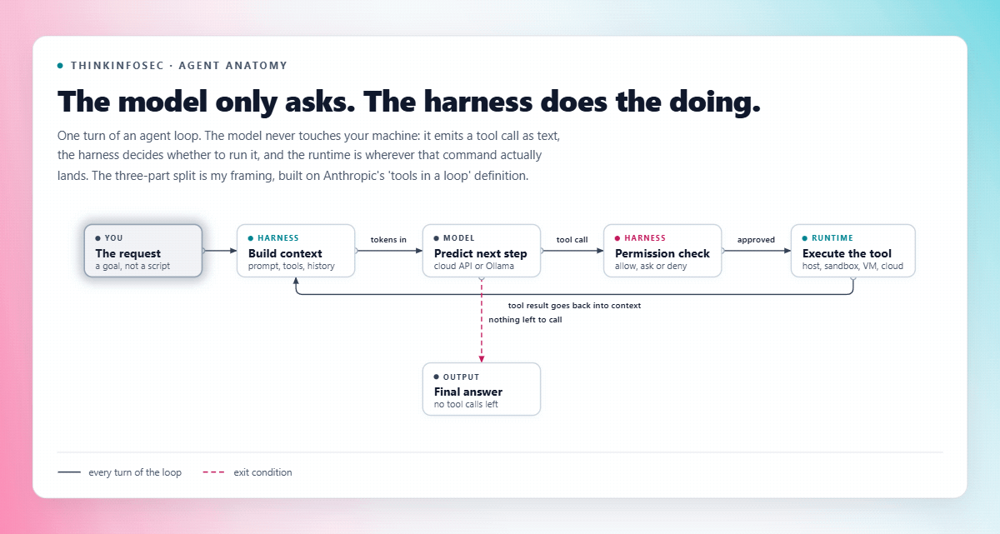
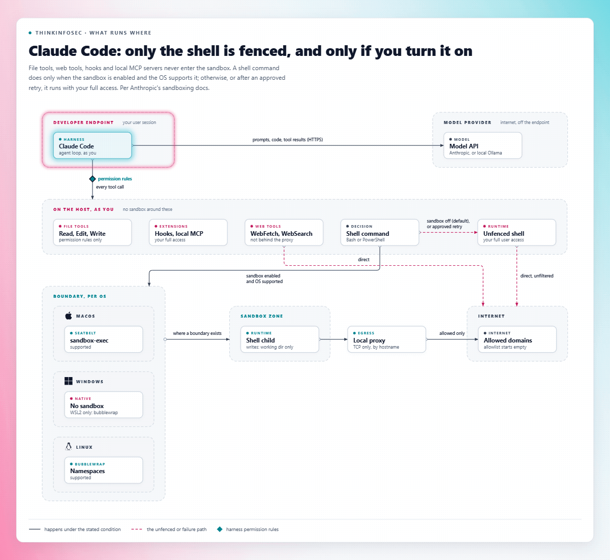
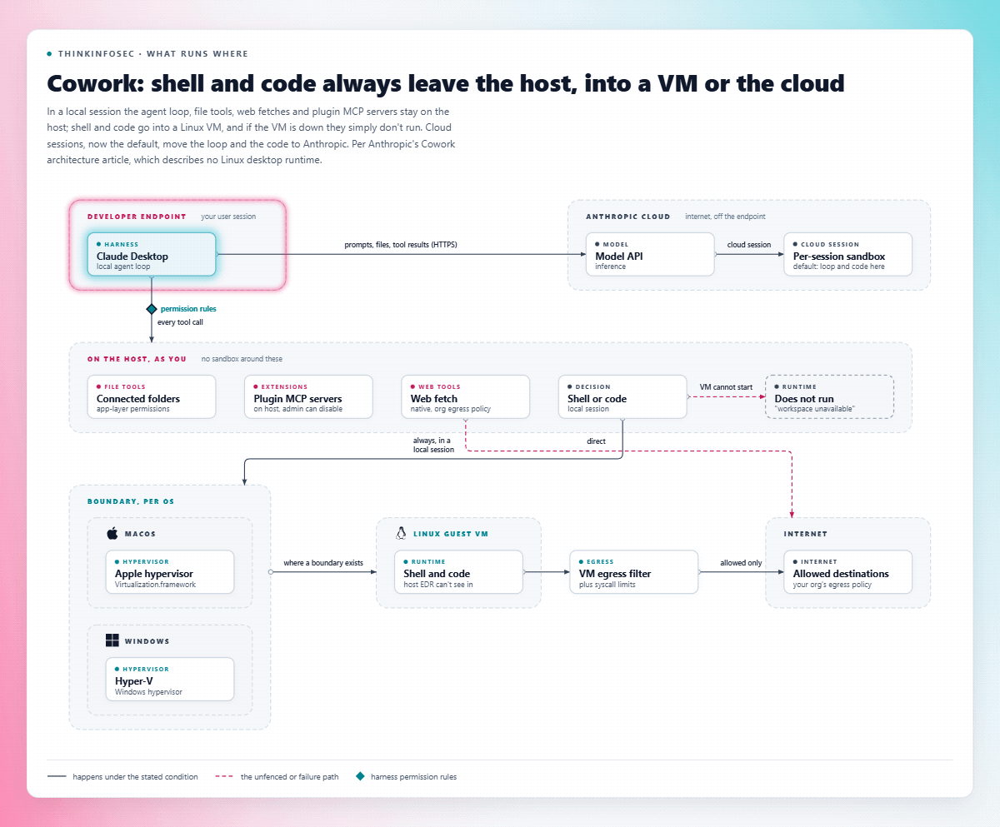
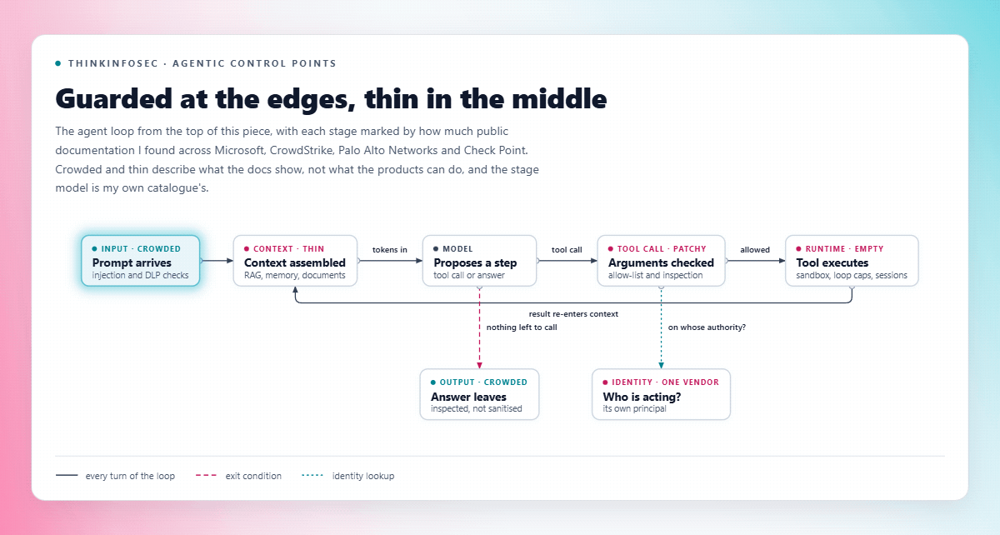
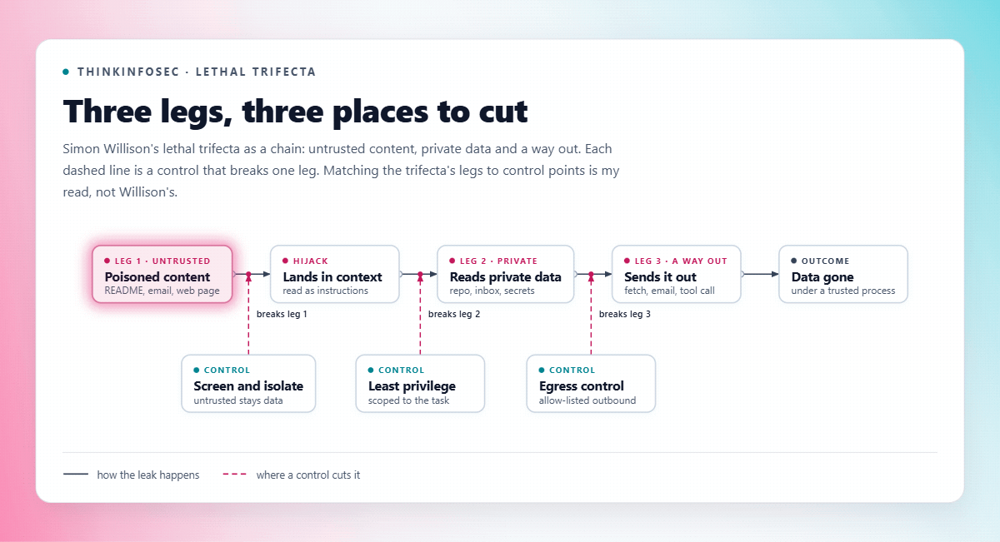
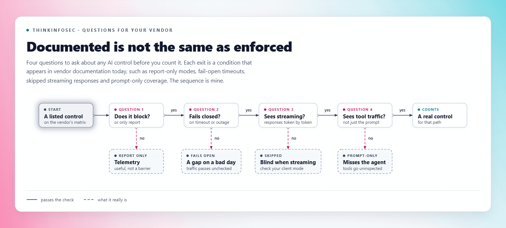

The question
Where it runs, and what can stop it
This research started with a chat between colleagues. A fellow SE at CrowdStrike asked me how AI agents actually work. Not the slide version, the mechanics: what's doing the thinking, what's doing the doing, and where it all runs. I gave a reasonable answer. Not a great one.
And it's the same question sitting underneath almost every customer conversation I have about securing AI. You can't explain how to secure something until the person across the table understands what it is, where it runs, and where a control could even sit. Every time I walk a customer through AI security, we end up back at the anatomy of the agent first. So I went and did the research properly, mostly so that the next time someone asks, the answer is a great one. This is that research.
(Quick disclosure, since CrowdStrike's products come up alongside its competitors' below: I work at CrowdStrike. Everything here comes from each vendor's public documentation, and the views are mine, not my employer's.)
If you ask five people what an "AI agent" is, you get six answers and a vendor slide. That would be fine if agents were still a demo. They aren't. They are on developer laptops right now, running shell commands under real user accounts. The customer questions I hear boil down to two. When Claude, Cursor or Codex runs a command on that machine, where does it run, and who can see it? And when it's about to do something it shouldn't, what can actually stop it?
Those two questions turn out to be the same question asked from different ends. So let's build this up properly: from the concept, through where the code lands, to the controls that exist, and finally to how you architect around what's still missing.
The loop
What an agent actually is
The cleanest definition I know of is still Anthropic's, from Building effective agents (December 2024). It separates two things that marketing tends to blend. Workflows are "systems where LLMs and tools are orchestrated through predefined code paths". Agents are "systems where LLMs dynamically direct their own processes and tool usage". And then the line that does all the work:
They are typically just LLMs using tools based on environmental feedback in a loop.
That's it. A loop. Worth pulling this apart into three pieces, because the whole security conversation depends on keeping them separate. The three-way split below is my framing, not Anthropic's, but it maps onto every product in this piece.
The model is a text predictor. It takes tokens in and produces tokens out. It has no hands. When it "runs a command", what it really does is emit a structured request that says, in effect, please call the shell tool with this string.
The harness is the program around the model. It assembles the context (system prompt, tool definitions, conversation history, file contents), sends it to the model, parses the tool call that comes back, decides whether that call is allowed, executes it, and feeds the result back in. Claude Code, Cursor's agent, Codex CLI and Antigravity are all harnesses. The harness is where permissions, memory, sub-agents and hooks live.
The runtime is where the tool call physically lands: your shell on your host, a kernel-level sandbox, a virtual machine (VM), or somebody else's cloud. This is the part that decides blast radius, and it's the part that varies wildly between products and between Windows and Mac.

The loop in the diagram is worth staring at for a second, because of what flows along the bottom edge. Every tool result goes back into the model's context. A web page the agent fetched, a README in a cloned repo, a Slack message pulled through a connector: all of it becomes input the model reasons over on the next turn. There's no separate channel for "data" versus "instructions". That is prompt injection in one sentence, and it's structural, not a bug somebody forgot to fix. Keep this loop in your head, because later in the piece we'll lay every security control onto it.
The model
Ollama is not an agent (and that matters)
There's a common confusion that goes "we run local models through Ollama, so our agent is local and contained". Half of that sentence is about the model and the other half is about the runtime, and they have nothing to do with each other.
Ollama is a model provider. It loads weights, serves inference over an HTTP API on your machine, and that's where its job ends. Its own tool calling documentation shows this quite plainly if you read the example code: the model returns a tool call, and the client application runs the function and posts the result back. In the docs' words, "an agent loop allows the model to decide when to invoke tools and incorporate their results into its replies". Decide when. Not execute.
Which means you can swap the brain without changing the hands. Per Ollama's Claude Code integration page, "Ollama connects Claude Code to local and cloud models through its Anthropic-compatible API", and the manual setup is three environment variables:
ANTHROPIC_BASE_URL=http://localhost:11434
ANTHROPIC_AUTH_TOKEN=ollama
ANTHROPIC_API_KEY=""The harness thinks it's talking to Anthropic. It's talking to a model on your GPU. There's even a one-liner now, ollama launch claude, that wires it up for you. The same page recommends a context window of 64k or more for local models, which tells you how much of an agent's "intelligence" is really just the harness stuffing context in.
Here's the security read, and it's mine. Going local changes exactly one thing: where your prompts and code get sent for inference. That's a real data-sovereignty win. It changes nothing about what the harness is allowed to execute. The same Bash tool, the same file writes, the same Model Context Protocol (MCP) servers, the same permissions. And you've arguably made one thing worse, because a small local model is the one deciding which commands to run, and the big frontier labs spend a lot of effort training their models to resist injected instructions. I haven't seen a rigorous independent comparison of injection resistance between frontier and small open-weight models inside the same harness, so take that as a reasoned worry rather than a measured fact.
Long story short: Ollama versus a cloud API is a privacy decision. Sandbox versus no sandbox is a safety decision. Don't let one stand in for the other.
The runtime
So where does the code run?
This is where the products genuinely differ, and where Windows and Mac part ways. The spectrum below is how I line them up.

Hold that picture, and let's go product by product, using each vendor's own documentation.
Claude Code runs on your host as you. Its sandboxing docs describe an optional OS-level sandbox: Seatbelt on macOS, bubblewrap on Linux and WSL2 (Windows Subsystem for Linux). Three sentences from that page deserve to be read slowly by anyone running a Windows fleet:
The sandbox runs on macOS, Linux, and WSL2. On native Windows, Claude Code runs commands unsandboxed.
And: "The sandbox is off by default." And on scope: "The sandbox covers shell commands only." The built-in file tools follow permission rules instead, and hooks, local MCP servers and a few other extension points, per the same page, "run with your full access". It also fails open by default: if the platform can't support the sandbox, commands run without it unless you set sandbox.failIfUnavailable. Even when it's on, the default policy allows reads of the whole machine, including ~/.ssh and ~/.aws/credentials, unless you deny them. Full credit to Anthropic for documenting all of this bluntly. But the honest summary for a Windows shop is that the control that exists is the permission prompt, not a kernel boundary. (The open-source sandbox-runtime repo reportedly carries an alpha Windows backend; I only have that second-hand, so I'm not counting it.)

Claude Cowork takes the opposite approach. Anthropic's desktop architecture overview says that for local sessions "the agent loop runs natively on the device", but "shell commands and any code Claude writes execute inside a dedicated Linux VM", isolated by "Apple Virtualization.framework on macOS, Hyper-V on Windows". So on both platforms the code runs in a Linux guest, not in your Windows or macOS userland. Note the split, though: file reads and writes in connected folders, web fetches and local plugin MCP servers still run natively, gated by an application-layer permission system rather than the hypervisor. The same article says Cowork sessions now run in the cloud by default, in a per-session sandbox on Anthropic's infrastructure, with local execution remaining for existing desktop deployments.

Cursor published a properly useful engineering write-up, Agent sandboxing (February 2026). On macOS it uses Seatbelt via sandbox-exec with a dynamically generated policy. On Linux it combines Landlock and seccomp directly. On Windows it runs that Linux sandbox inside WSL2, because, as the post puts it, native Windows primitives are mostly built for browsers, and "we're working with Microsoft to ensure the necessary primitives become available". They considered VMs and rejected them for startup latency and memory overhead. The motivation is the interesting part: per-command approval leads to "approval fatigue, which undermines the point of approvals in the first place". Cursor's own number is that sandboxed agents "stop 40% less often than unsandboxed ones". That's the company measuring its own product, so standard vendor discount applies, but the direction is believable to anyone who has clicked "allow" forty times before lunch.

Codex is the one that went native on Windows. OpenAI's sandboxing docs state that "the default permissions mode applies sandboxing automatically", with Seatbelt on macOS, bubblewrap on Linux, and on Windows "the native Windows sandbox when you run in PowerShell" (or the Linux implementation under WSL2). Three modes: read-only, workspace-write and the helpfully named danger-full-access. The default Auto preset pairs workspace-write with approval on request, and the approvals and security docs are blunt about the network: "By default, the agent runs with network access turned off." Two caveats sit in those same docs. The command proxy doesn't filter web search, connectors or MCP servers, and cloud tasks run in OpenAI's containers instead, with the agent phase offline by default.
The Windows story has moved, too. OpenAI's Windows sandbox docs now put Microsoft Execution Containers (MXC) first, on Windows 11 24H2 build 26100.9278 or 25H2 build 26200.9278 and later, and list two legacy fallbacks: elevated, which provisions dedicated sandbox users and firewall rules, and unelevated, which uses a restricted token and access control lists (ACLs). OpenAI's engineering post on how the original was built wouldn't load for me (a 403), so the background comes via Daniel Vaughan's write-up of it, and gets treated accordingly: sandbox users and firewall rules were needed because a restricted token on its own can't block network traffic. If that account is right, it's a neat illustration of the Windows problem. On a Mac you write a Seatbelt profile. On Windows, until the OS grew a container primitive, you ended up provisioning user accounts and firewall rules to get the same outcome.

Antigravity documents a terminal sandbox that uses sandbox-exec on macOS and kernel namespaces on Linux. On Windows, the CLI docs say "commands run in an AppContainer", and the requirement is specific: Windows 11 24H2 with the August 2026 update or later. Codex's MXC requirement lands on the same Windows 11 releases, so my read (and it is mine, no vendor says it) is that both are the "necessary primitives" Cursor was waiting on from Microsoft, finally showing up in the OS. The sandbox is on by default in the app and off by default in the CLI, and there's a Turbo preset that the settings docs describe as "run all commands without restrictions". Worth knowing as well: the Cloud Security Alliance published a research note describing a prompt injection that abused a native file-search tool, which fired before Strict Mode ever evaluated a command, and Google reportedly patched it in April. I've only read summaries of that one, but the lesson generalises: a sandbox around the shell does nothing for tools that never go through the shell.

Side by side, as documented today:
| macOS | Windows | Sandbox on by default? | |
|---|---|---|---|
| Claude Code | Seatbelt | None natively. bubblewrap under WSL2 | No |
| Claude Cowork (local) | Linux VM on Virtualization.framework | Linux VM on Hyper-V | Yes, for shell and code (cloud is now the default) |
| Cursor | Seatbelt | Linux sandbox inside WSL2 | Per Cursor's docs, yes where available |
| Codex | Seatbelt | Native: Microsoft Execution Containers; legacy sandbox users or restricted token | Yes |
| Antigravity | Seatbelt | AppContainer on recent Windows 11 builds | App yes, CLI no |
Notice the Mac column. Everybody landed on Seatbelt, a mechanism Apple deprecated in 2016 and which Cursor points out is still what Chrome uses. Notice the Windows column: five products, four different answers. That inconsistency is the Windows story.
The sensor
Why your EDR can't see it
"No EDR visibility" is actually three different problems wearing one label, and they map straight onto that spectrum diagram.
On the host, the EDR sees everything and understands nothing. When the agent runs directly as your user, endpoint detection and response (EDR) tooling gets the full process tree. The trouble is attribution. Elastic Security Labs put it well in a piece on auditing Cursor with hooks (August 2026, Wieger van der Meulen): agent activity "happens under the developer's account inside processes the developer launched", so "this is indistinguishable from the developer doing the same things". The EDR sees powershell.exe spawned by a signed, trusted developer tool. It doesn't see the prompt, or the poisoned README that caused it.
And the telemetry really does look like an intrusion. Sophos X-Ops published When AI agents look like attackers in July, based on seven days of June telemetry from its Windows behavioural engine. By its own description it's "a first-pass, short signal dump", one vendor's fleet rather than a census, so read it as a signal. But the examples are vivid. Claude Code ran cmdkey.exe /list against Windows Credential Manager. A skill chain used PowerShell and the Data Protection API (DPAPI) to decrypt browser data. Codex tried to fetch a Python installer with certutil, got blocked, and pivoted to bitsadmin, which is exactly what a hands-on-keyboard attacker does. Cursor wrote a VBScript file into the Startup folder. Credential access made up 56.2% of the blocking detections. Sophos's position is the right one, I think: the rules were correct to fire, and an agent doing something risky does not make it safe. The temptation to allowlist claude.exe and cursor.exe to quiet the queue is exactly how you build the blind spot yourself.
In a local VM, the EDR is blind by design. This one isn't an inference, Anthropic says it outright in the Cowork architecture article:
The VM is isolated from host-based security tools by design, so an EDR sensor on the host can't see inside it.
Your Windows sensor sees a Hyper-V worker process using CPU. What runs inside the Linux guest is opaque. Anthropic's answer is that admins can run an approved vendor's sensor inside the VM, which the article says is in beta on macOS and Windows. Good that it exists. It's also a second sensor deployment, on a different OS, for a guest your endpoint team didn't build.
In the cloud, there is no endpoint. Same article: "Sessions in the cloud run entirely outside your endpoints, so EDR tools can't observe them", followed by a sentence I wish more vendor docs had the nerve to write: "If your compliance posture depends on endpoint visibility, account for this before rolling out Cowork."
There's a fourth gap that sits across all three. A lot of what an agent does never spawns a process at all. A file edit is the harness's own process writing to disk. A web fetch or an MCP call is an HTTPS request from inside a trusted binary. The reasoning that led to the action lives in a TLS session to a model API. Process telemetry was built to catch programs, and the interesting part of an agent is the conversation.
Which raises the obvious next question. If the EDR can't reliably see or stop it, what can?
The catalogue
So what can actually stop it?
"AI security" on a product page could mean a browser extension that blocks you pasting a customer list into ChatGPT. It could also mean something that inspects an agent's tool call before it runs. Those are wildly different controls at wildly different points in the loop, and only one of them does anything about the agent on your developer's laptop. So let's map them.
For a while now I've been keeping my own catalogue of security technology, built from vendor documentation rather than marketing. For AI security it breaks the agent loop into 36 control points across nine stages: governance, identity, input, context, tools, the loop itself, output, build and assurance. Most are anchored to MITRE ATLAS (Adversarial Threat Landscape for Artificial-Intelligence Systems) techniques, the OWASP Top 10 for LLM Applications, or both. Every one has an acceptance test before it counts. Tool and MCP server allow-listing, for example, only counts as documented if the vendor's docs say the product can restrict or block the tools available to an agent. Observing them isn't enough. Dashboards don't count.
Then I read the public docs of four vendors against all 36: Microsoft, CrowdStrike, Palo Alto Networks and Check Point. A few honest caveats, because they change how you should read everything below:
- "Undocumented" means I didn't find it, not that it doesn't exist. It's a gap in the evidence, not proof of a gap in the product. Some of these vendors have gated docs, and some ship faster than they write.
- This is a snapshot of a fast-moving landscape. Every vendor here is building out depth, accuracy and flexibility of deployment as quickly as it can, so a cell that's empty today may well be filled next quarter.
- Four vendors is not the market. They're the four big platforms my catalogue covers in depth so far. Specialist AI security startups aren't in this pass.
- The stage model is mine. The nine stages, the 36 points and their acceptance tests are my catalogue's framing, still marked as under review, not an industry standard. I've anchored them to ATLAS and OWASP so you can check my homework.
- Documented isn't tested. Same as the runtime section above, this is a reading exercise.
The pattern
Guarded at the edges, thin in the middle
Lay the control points over the same agent loop from the top of the piece, and a pattern jumps out.

The two ends of the loop are crowded. Prompt injection and jailbreak detection on input, sensitive data in prompts, response inspection on the way out, and AI asset discovery all have documentation from all four vendors. Everyone has a story for "what goes into the model" and "what comes out of it".
The middle, where the agent actually does things, is thin. Tool calls are patchy. The runtime, meaning sandboxed execution, loop caps and session handling, has no security-vendor documentation at all across the four. Identity has exactly one vendor with a real answer.
My read on why: the crowded controls are the ones that fit where security products already sat. Data loss prevention (DLP) was already watching the browser. Secure access service edge (SASE) gateways were already inline on web traffic. Cloud posture tools were already scanning your cloud accounts. Bolting "now also for prompts" onto an existing enforcement point is a natural product move. The middle of the agent loop doesn't run through any of those places. It runs inside the harness, which, if you've read this far, you already know is where the sandboxes live.
The trifecta
The lethal trifecta, and where to cut it
If you only remember one framework from this piece, make it Simon Willison's lethal trifecta (June 2025). An agent becomes a data-theft machine when it combines three things: access to private data, exposure to untrusted content, and the ability to externally communicate "in a way that could be used to steal your data". Each one is useful on its own. Put all three together and an attacker who can get text in front of your agent can get your data out. Notice that the poisoned README and the Slack message from the loop section are exactly the "untrusted content" leg.
His conclusion is blunt, and I agree with it: "The LLM vendors are not going to save us!" He's equally sceptical of guardrail products, noting that "they'll almost always carry confident claims that they capture '95% of attacks' or similar". In security, a 5% miss rate against an adaptive attacker is a failing grade, not a success.
So rather than trying to detect every malicious prompt, the better move is structural: cut one leg.

Each leg lines up with a control point in my catalogue (that mapping is my read, not Willison's), and this is where the coverage gets uncomfortable.
Leg 1, untrusted content. The strongest version of this control isn't detection. It's isolation: structurally separating untrusted content so it can never steer a privileged decision. Google DeepMind's CaMeL paper, Defeating Prompt Injections by Design, is the reference design. A privileged planner writes the program from the trusted user request, and untrusted data only ever flows through it as data, with capabilities tracked on every value. Per the paper's own abstract (v2, June 2025), it solves 77% of AgentDojo tasks with provable security, against 84% for an undefended system. That's a real utility cost for a real guarantee. Of the four vendors, only Microsoft documents anything in this space: Spotlighting in Azure AI Foundry guardrails, which tags untrusted document content so the model can tell it apart. It's in preview, and it's a marking technique rather than a CaMeL-style separation. Detection-based screening of ingested content is a bit better covered, with Microsoft and Check Point documenting it.
Leg 2, private data. Least-privilege agent authorisation: the agent can reach only what its task needs. Two of four document this. Microsoft does it through Entra Agent ID scoped tokens and blueprint-inherited permissions. Palo Alto Networks limits Cortex agents to the permissions of the invoking user. That second one is honest and sensible, but notice what it means. The agent is exactly as privileged as the human, which is the Sophos cmdkey.exe problem above, written down as a design choice. On a developer laptop the runtime matters here too: Claude Code's default sandbox policy still allows reads of ~/.ssh unless you deny them.
Leg 3, a way out. Agent egress control. One of four: Microsoft's Global Secure Access, per the Entra security-for-AI docs, with upload and download limits and threat-intel blocking for agent traffic. But look back at the runtime section: Codex runs with network access off by default. That's an egress control too, and arguably the strongest one in this whole piece. It just lives in the harness, not in a security product.
The hands
Tools and MCP: where the agent gets its hands
MCP is also where a lot of my study time has gone lately, working towards the Claude Architect certification. The deeper I get into it, the clearer it is that MCP is how an agent gets its hands: every server you connect is a new set of things the model can ask the harness to do, and new content flowing back into its context. That's why this is the stage I care about most. It's also where CurXecute (CVE-2025-54135) happened. A message arriving through a Slack MCP server persuaded Cursor's agent to rewrite its own MCP configuration, which then launched attacker-chosen commands. No shell sandbox sat in that path. It was fixed in the 1.3 line, and the pattern has resurfaced in other products since. Same lesson as the Antigravity file-search bug: a sandbox around the shell does nothing for tools that never go through the shell.
There are three distinct controls here, and it's worth pulling them apart:
- Allow-listing, which decides what tools and MCP servers the agent can load at all.
- Tool-call input inspection, which checks the arguments before a tool runs.
- Tool-response inspection, which checks what comes back before it re-enters context. That's the bottom edge of the loop diagram, and the main route for indirect injection in agents.
For allow-listing, two of four document real blocking. Check Point's Workforce AI Security admin guide describes an on-host agents policy that can allow or block MCP servers and individual tools, with a Trust Catalog behind it. Microsoft blocks at the network layer, with Global Secure Access web categories for APIs and MCP servers. Those are genuinely different positions. The host-side control knows which tool is being called. The network-side control knows which server is being reached. Neither knows what the other knows.
For inspection, CrowdStrike's Falcon Guardian (formerly AIDR) has the deepest documented surface I found. Its public collector docs describe an MCP proxy collector that can block or transform tool inputs and outputs on the host. There's a Kong gateway plugin that does the same for MCP traffic. And there's a Claude Code collector that plugs into the harness's own hooks:
UserPromptSubmit -> prompt checked (block or report, no redaction)
PreToolUse -> tool arguments checked before execution
PostToolUse -> tool output checked before it re-enters contextThat's the harness's own telemetry turned into an enforcement point, which is exactly where intent is visible and the EDR is blind. Check Point documents the same idea with its Claude Inference Hooks, returning verdicts on prompts and tool results.
Here's the catch. Hooks are, in Elastic's phrase from that Cursor piece, "tamper-evident" rather than tamper-proof, and they don't follow a developer who logs in with a personal account. Remember too that Claude Code's docs say hooks themselves "run with your full access". A hook-based control is only as strong as your grip on the harness's managed settings. If someone can edit the settings file, they can edit out the control.
One practical note while we're in CrowdStrike's docs. If you're an AIDR customer, CrowdStrike's own documentation says the AIDR console becomes inaccessible after 30 November 2026, and everything moves to Falcon Guardian. Per the same docs, almost everything carries over unchanged. The one real change is that standalone AIDR browser collectors don't exist in Guardian, and browser coverage moves to the Falcon Browser extension under a Guardian endpoint policy. Worth checking now rather than on the 29th.
The conditions
Documented is not the same as enforced
This was the most useful thing to come out of reading every row, and it doesn't show up in any coverage count. Plenty of controls that count as "documented" have conditions attached, and the conditions are sitting right there in the vendor's own docs.
A few examples, all from CrowdStrike's documentation. That's partly because it's the product I know best, and partly because those docs write the edge cases down in detail. Every product in this space has conditions like these. Not every vendor publishes them as plainly.
- The Portkey plugin fails open on timeout. If the guardrail is slow, the request goes through.
- The TrueFoundry guardrail covers prompts only, with no MCP tool content, and its output check is skipped when streaming.
- The Kong response plugin doesn't support streaming.
- The JetStream guardrail inspects API requests but not MCP or tool traffic.
- Per CrowdStrike's gated docs, the endpoint AI agent control policy can block on Windows but not on Mac. Funny how the platform split from the runtime section shows up again, just reversed.
Fail-open should sound familiar. It's the same pattern as Claude Code's sandbox, which runs commands without it when the platform can't support it unless you set sandbox.failIfUnavailable. Defaults that fail open are a theme in this space, not an exception.
Across the other vendors, a lot of the documented coverage is report-only. Many detections are out-of-band alerts after the fact, which is useful for the SOC but isn't a barrier. And for some, Microsoft's Prompt Shields and Palo Alto's AI Runtime Firewall among them, I couldn't tell from the docs whether the control blocks or just flags. That's not an accusation. It means the docs didn't say clearly, and you should ask.
Streaming is the sneaky one. Most chat interfaces and plenty of agent clients stream responses token by token, so a response check that's skipped when streaming may be skipped most of the time in practice.
So before you tick a box on a vendor matrix, run each control through four questions:

The sequence is mine, but every exit on it is a condition that appears in real vendor documentation today. A control that fails any of them isn't worthless. Report-only telemetry is exactly what your detection engineers want, especially given how little the EDR can tell them. But it's not the control you thought you bought, and your risk register should say which one you have.
Identity
Identity: who is the agent, anyway?
Every product in the runtime table runs as you. That's why the Sophos detections are so awkward to triage, and why Elastic calls agent activity indistinguishable from the developer's. So identity should be where the industry has the clearest answer. It isn't.
An agent as a distinct principal, with its own identity separate from the human who launched it or a shared service account, so its actions are attributable. One of four: Microsoft, with Entra Agent ID agent identities and blueprints. Risk-based access decisions for agents, meaning Conditional Access evaluated for agent sign-ins, including revoking a risky agent. Also one of four, also Microsoft, under Agent 365.
Agent-to-agent authentication and delegation is zero of four. When one agent hands work to another, nobody in this set documents authenticating both sides and making the delegation authorised and inspectable. The OWASP GenAI Security Project's Top 10 for Agentic Applications (published 9 December 2025) gives this its own entry, Insecure Inter-Agent Communication, alongside Identity and Privilege Abuse. Multi-agent setups, and every harness above now has sub-agents, are exactly where delegation chains get long and nobody can say whose authority a sub-agent is acting on.
My read is that this isn't a shortcoming of the other three vendors. Identity is an identity provider's job, and Microsoft happens to own one. Everyone else integrates with Entra, Okta and friends rather than replacing them. But it does mean the honest answer to "how do I give my agents their own identities?" is currently "through your IdP, if it supports it". Agents launched from a developer's terminal mostly don't get one at all. They're the developer.
The layer
The empty middle isn't a vendor gap, it's a layer
Now for the zeros. These control points had no documentation from any of the four security vendors:
| Control point | Stage | What it means |
|---|---|---|
| Sandboxed tool and code execution | tools | agent code runs isolated, ideally ephemeral |
| Loop bounds | loop | hard iteration caps and timeouts in deterministic code |
| Prompt and agent-config change control | loop | system prompts, tool definitions and model swaps versioned and reviewed |
| Session state and reasoning-trace handling | loop | what conversation logs and reasoning blocks leave the system |
| Context and memory hygiene | context | injected instructions don't persist across sessions |
| Output handling before downstream use | output | model output treated as untrusted input to code, SQL, HTML or shell |
| Consumption and rate limits | input | caps on tokens and cost ("denial of wallet") |
The tempting headline is "security vendors are ignoring the agent runtime". It's not quite right, and you've already seen why.
The top row of that table is the whole runtime section of this piece. Codex sandboxes by default. Claude Code's sandbox is opt-in and absent on native Windows. Cowork runs code in a VM. Cursor sandboxes inside WSL2. Loop bounds, memory, session handling and config change control are harness features too, and every one of these products has managed settings for permissions and bypass flags. The control exists. It lives in the agent product, not in your security stack. Output handling is plain old application security, the same rule as never trusting user input, applied to the model's output (OWASP lists it as Improper Output Handling). Rate limiting usually lives at the model provider or your API gateway.
So the middle isn't empty, it's somewhere else. That's arguably worse for most security teams, because "somewhere else" means:
- it's configured by developers or a platform team, not by security
- it's configured per product, and as the runtime table shows, every product does it differently, sometimes differently per OS
- it doesn't feed your SIEM unless someone wires it up
- and no vendor matrix will ever show it to you as a gap
This is the hinge of the whole piece. The runtime half and the control half describe the same hole from two ends: the controls that matter most are harness settings, and the harness settings are the ones nobody in security owns.
Zoom out one more step and it stops being a vendor question at all. AI security is a holistic problem, and every solution on the market today, including the ones I work with every day, addresses part of it. I don't think that's a failing. It's how security technology has always evolved. A new technology gets funded and shipped at speed, adoption races ahead, and the controls follow behind. It happened with the web, with mobile and with cloud. Agents are the sharpest example yet, because the money went into making them capable long before anyone funded making them controllable. The vendors are closing that gap quickly. The gap exists because of the order things got built in, and that's exactly why your own architecture has to cover what the products don't yet.
Build
Quickly: build and assurance
Two stages I'll cover briefly, because they matter more for teams building AI apps than for teams running coding agents.
Build. Model artifact scanning, for code-executing pickle files and backdoors, is documented by Microsoft for Azure ML registries only. Palo Alto Networks claims AI model security covering deserialization and load-time code, but I only found that on marketing pages, so it gets the standard discount until the technical docs catch up. Model provenance has one documented answer: an Azure Policy that restricts deployment to approved registry models (preview). For AI component dependencies, CrowdStrike and Microsoft both document scanning images and code for vulnerable AI packages.
Assurance. This is better than the middle. Three of four document an AI interaction audit trail (CrowdStrike says it retains this data for six months in its AIDR dashboards and Next-Gen SIEM, per its gated docs). Two of four get AI detections into the SOC with response integration. Three of four document AI red teaming. That's Check Point (through the Lakera acquisition, announced in September 2025), Microsoft (scheduled scans, in preview) and Palo Alto Networks.
The crosswalk
Mapping it onto OWASP's agentic list
For anyone who reports against frameworks, here's how the OWASP Agentic Top 10 lines up against the control points and what I found. The mapping is mine, my catalogue's crosswalk to this list is still unreviewed, and "coverage" means vendor documentation across the four, not effectiveness. Where the harness carries the control, I've said so.
| OWASP agentic risk | Control points that address it | Documented coverage |
|---|---|---|
| Agent Goal Hijack | input injection detection, indirect injection screening, untrusted-content isolation | detection crowded, isolation thin |
| Tool Misuse and Exploitation | allow-listing, tool-call and tool-response inspection | patchy, mostly two to three of four |
| Identity and Privilege Abuse | agent as principal, least privilege, risk-based access | one to two of four |
| Agentic Supply Chain Vulnerabilities | AI dependency security, model scanning and provenance | thin |
| Unexpected Code Execution | sandboxed execution, output handling | none from security vendors, lives in the harness |
| Memory and Context Poisoning | memory hygiene, retrieval integrity | near zero |
| Insecure Inter-Agent Communication | agent-to-agent authentication | none |
| Cascading Failures | loop bounds, detection-to-response integration | loop bounds none, SOC integration two of four |
| Human-Agent Trust Exploitation | human approval for high-impact actions, grounding | one of four documented |
| Rogue Agents | inventory, telemetry, risk-based revocation | inventory crowded, revocation one of four |
On human approval, Palo Alto Networks documents approval gates for sensitive Cortex actions like host isolation and firewall rule deletion. CrowdStrike talks about "bounded autonomy" for Charlotte AI, but only on marketing pages so far. And of course every harness in the runtime table has its own approval prompt, which brings back Cursor's point about approval fatigue.
The landing
The complexity, honestly
Here's where I land on why this is hard, and none of it is solved by picking the "right" product.
Isolation and visibility trade against each other. The safest place to run untrusted code (a VM, or someone else's cloud) is the place your endpoint stack can't look. The most observable place (the bare host) is the one where a mistake costs the most. Every vendor in the runtime table has picked a different point on that line, sometimes a different point per OS.
The sandbox usually covers the shell and not much else. Hooks and local MCP servers run with full access, and the tool layer is where CurXecute and the Antigravity bug both lived.
Defaults do the real work, and they are all over the place. Sandbox off by default here, on by default there, fail-open in one harness, fail-open in a guardrail plugin, unavailable on older Windows builds in another. And every product ships a "just let it run" switch, whether it's called --dangerously-skip-permissions, danger-full-access or Turbo. The Sophos credential-dumping example involved exactly that flag.
The security stack is strongest where the agent is least interesting, for now. Prompts in and answers out are well covered. Tool calls, identity and the runtime, where the agent actually acts, are thin or sit outside security's reach entirely. That will shift as the products mature, but you're deploying agents today, not next year.
And the Windows gap is real. On macOS there's one mature primitive that everyone uses. On Windows, depending on the tool, you get nothing, a Linux sandbox inside WSL2 (itself a VM your EDR has limited sight into), a bespoke token-and-ACL construction, or an AppContainer that needs a very recent build. If your fleet is Windows 11 Enterprise, as mine is, you cannot assume the Mac-centric blog post you read about agent sandboxing describes your machines.
All of this to say: treat the agent as a non-human identity operating on a human's credentials, own the harness as a security control, and pick at least one leg of the trifecta to cut reliably.
Monday
Architecting for Effective Solutions
No single product closes this today, so the answer is architecture: layering the controls the products do provide with the ones you own in the harness, the identity provider and the network. Here's how I'd build it, roughly in order.
- Inventory the harnesses, then the modes. Knowing Cursor is installed is step one. Knowing which machines run it with the sandbox off is the useful bit.
- Own the harness settings as security controls. Each of these tools has managed settings. Turn the sandbox on where it exists, set fail-closed where it's offered, disable the bypass flags, enforce hooks centrally, and alert on changes to any of it. This is the empty middle, and no vendor will do it for you.
- Pick a trifecta leg to cut for each agent you run. For coding agents, egress is usually the cheapest: network off by default, allow-list what's needed. For agents reading email or the web, it's isolation and least privilege. You don't need all three legs closed, you need one closed reliably.
- Put your MCP servers on an allow-list. On the host if your tooling supports it, at the network if it doesn't, ideally both. Unvetted MCP servers are how CurXecute happened.
- Take the harness's own telemetry, and use it to enforce where you can. Hooks, OpenTelemetry export and compliance APIs are the only place intent is recorded. Remember they're tamper-evident, not tamper-proof, and they don't cover a personal login.
- Don't allowlist the binary. Scope EDR tuning by parent process and workspace path, and keep credential-access and persistence rules firing no matter who the parent is.
- Run every "AI security" control through the four questions. Block or report, fail open or closed, streaming or not, prompt-only or tools too. Write the answers into the risk register next to the control.
- Decide your position on VMs and cloud sessions on purpose. Either get a sensor into the guest, or accept the gap in writing with compensating controls at the identity and network layers.
- Give agents identities where your IdP allows it, name a human owner for each, and keep secrets out of reach. Where agents can't have their own identity, at least make their activity attributable in logs, and use short-lived credentials and deny-read rules so an agent that can be talked into anything can't read
~/.aws/credentials. - If you're on CrowdStrike AIDR, sort out the Falcon Guardian move before 30 November, especially browser coverage.
A couple of honest limits on this research. I couldn't load OpenAI's own Windows sandbox engineering post or The Hacker News coverage of the Antigravity fix, so those two points rest on secondary accounts and are flagged as such above. The control-point half is four vendors' public documentation, read once, against a catalogue that's still under review. Some docs were gated and I've attributed them in prose without links, and where a vendor says nothing I've said "undocumented", not "absent". I'd genuinely welcome corrections from anyone at these vendors who can point me at docs I missed. And all of it is what the documentation says, not what I've tested on a bench. Verifying each sandbox and each control with a canary file, a blocked outbound connection and a poisoned README, on both Windows and Mac, is the obvious follow-up piece.
Learn more about my Cloud and Security Projects: https://thinkinfosec.org
Thank you for reading and leave your thoughts/comments!